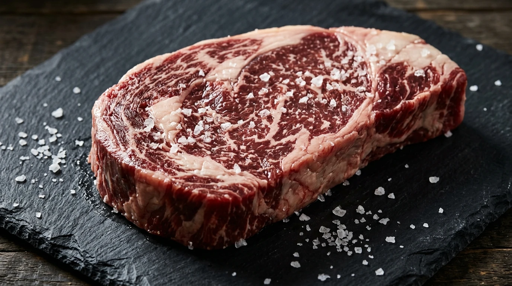
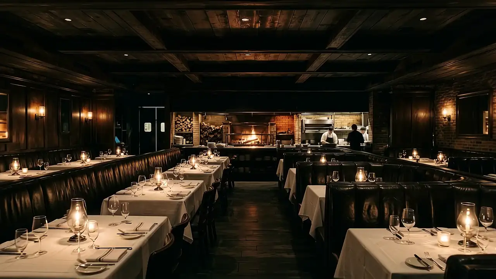
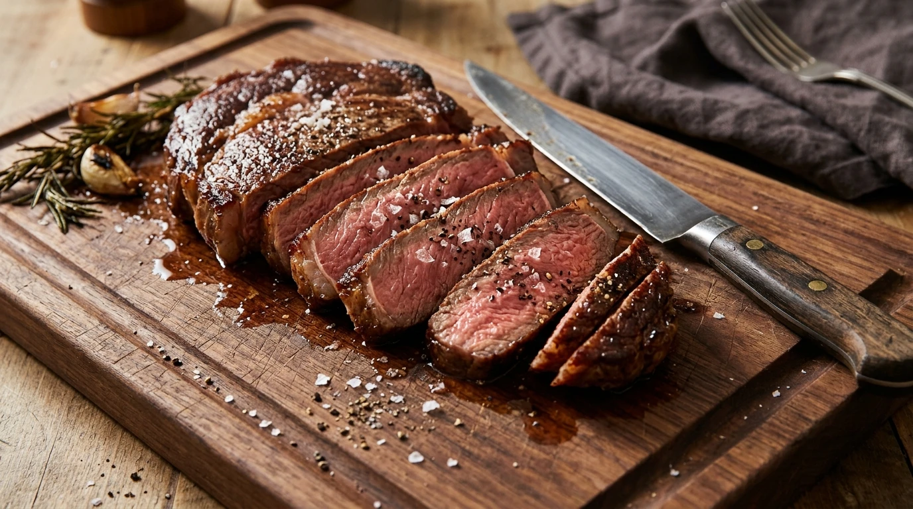
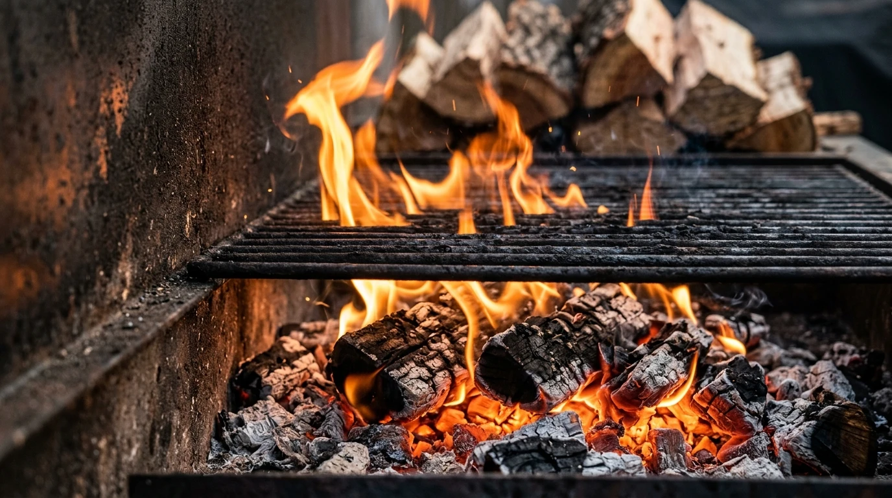
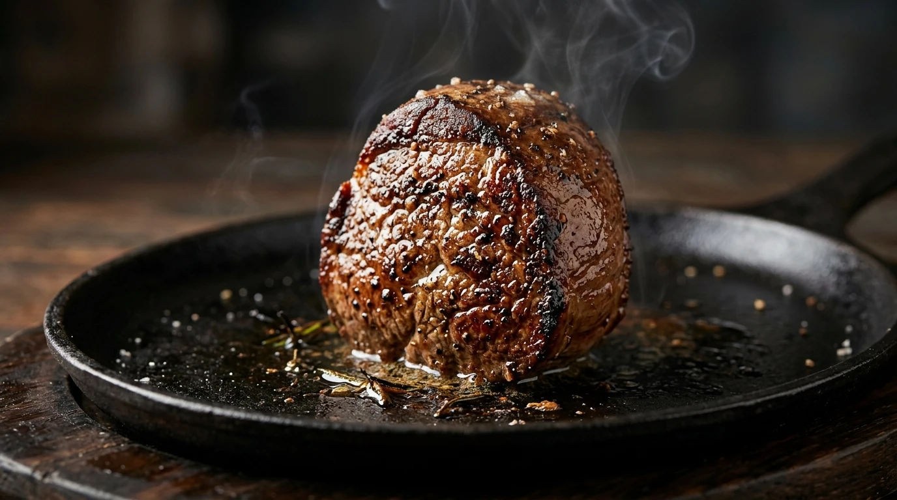
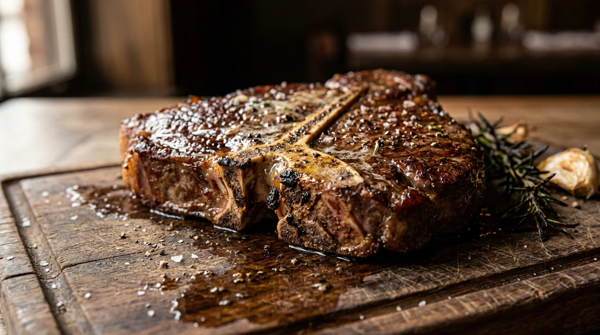
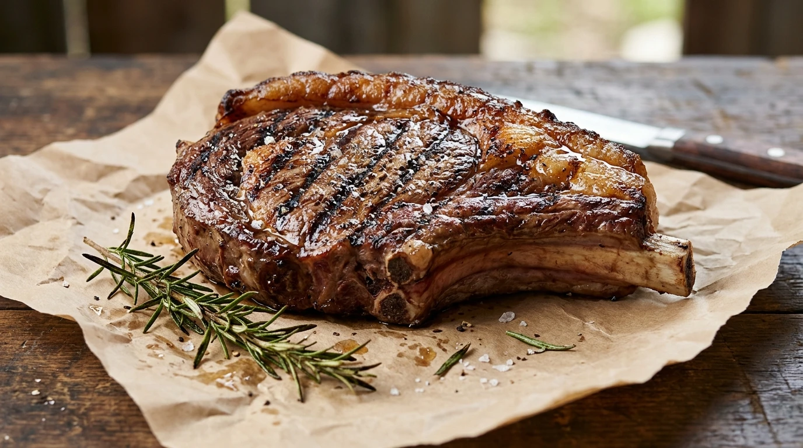
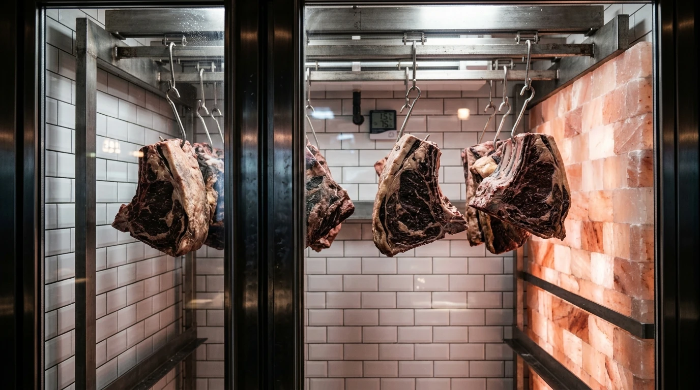
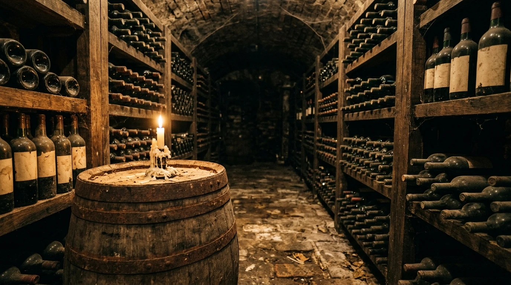
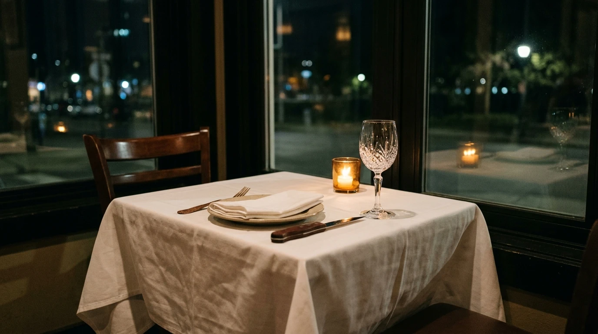

Ribeye
Rich, marbled, forgiving. The cut that tastes most of the fire.
Pairs with a structured Cabernet.

Every cut is cooked in view, over wood coals, and left to rest before it reaches you.
We cook four cuts, one way, on one fire. The rest of the evening is yours to take slowly.


Hardwood only. Lit at four, cooked on from six.
Scroll to move across the board. Each cut is aged in house and finished over wood coals.

Rich, marbled, forgiving. The cut that tastes most of the fire.
Pairs with a structured Cabernet.

Tender and quiet. Cooked gently, seasoned with salt and little else.
Pairs with a soft Pinot Noir.

Two textures on one bone: a firm strip and a tender fillet, shared or not.
Pairs with a peppery Syrah.

A thick cap of fat and a deep, mineral finish. For slow eaters.
Pairs with an aged Bordeaux blend.
Whole primals hang beside a salt-brick wall for weeks before they meet the fire. Time does the work no marinade can.


Bottles chosen to stand up to smoke and fat, opened by people who have tasted them with the food.
Four cuts connect to tonight. Pick one and we will note it on your booking.

Tell us when and how many. We confirm by message the same day.
Concept demo by ADC Innovations. Vuurhuis is not a real restaurant, so the booking button opens a message to a placeholder number.